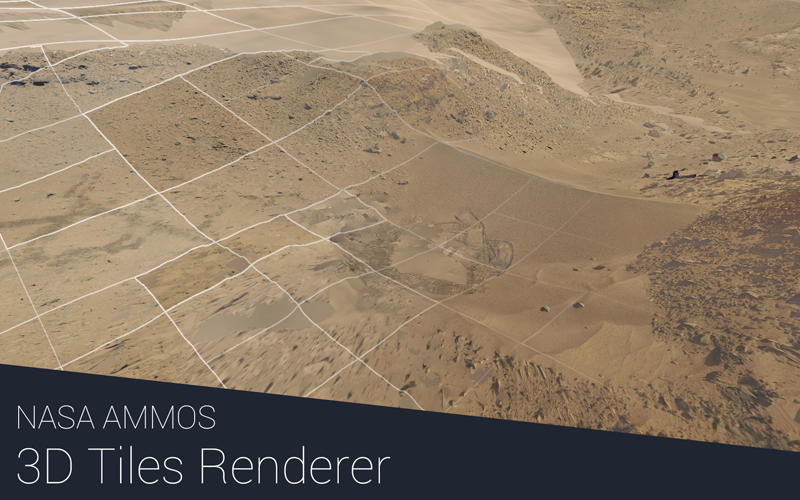

3DTilesRendererJS (JS Test) - v0.4.21
3d-tiles-renderer



JavaScript renderer implementation for the 3D Tiles format with support for both Three.js and Babylon.js. The renderer supports most of the 3D Tiles spec features with a few exceptions. For a list of available data sets and generation tools see the 3d Tiles resources list.
If a tileset or geometry does not load or render properly please make an issue! Example data is needed for adding and testing features. See the Feature Complete Milestone for information on which features are not yet implemented.
Examples
The following examples use Three.js. Babylon.js demos are also available for Mars and Google Photorealistic Tiles.
See the Three.js usage guide or Babylon.js usage guide for setup details with each engine.
| Example | Description |
|---|---|
| Core | |
| Dingo Gap Mars | Multiple tilesets |
| Kitchen Sink | All options and features |
| VR | Rendering in VR |
| External Tiles Providers ¹ | |
| Cesium Ion 3D Tiles | Standard Cesium Ion tileset |
| Cesium Ion Lunar | Lunar surface tiles |
| Cesium Ion Mars | Mars surface tiles |
| Google Photorealistic | Google Photorealistic Tiles |
| Google Globe | Google Globe Tiles |
| Customization | |
| Custom Material | Using a custom material |
| Offscreen Shadows | Shadows from offscreen tiles |
| Texture Overlays | Alternate texture overlays |
| Plugins | |
| Metadata | Tile metadata |
| Fade Transition | Tile LoD fade transition |
| Deep Zoom | Deep Zoom Image format |
| TMS / XYZ | TMS, XYZ map tiles |
| WMTS | WMTS map tiles |
| WMS | WMS map tiles |
| Quantized Mesh | Quantized mesh with overlays |
| Load Region | Loading tiles in region volumes |
| GeoJSON | GeoJSON overlays |
¹ Requires a Google Tiles API Key or Cesium Ion API Key
Getting Started
Installation
npm install 3d-tiles-renderer --save
Usage
- Three.js: Three.js renderer setup examples, custom materials, DRACO, Cesium Ion, and more
- Babylon.js: Babylon.js renderer setup, usage, and limitations
- React Three Fiber: R3F components for 3D Tiles
API
See API Reference: TilesRenderer, PriorityQueue, LRUCache, and BatchTable API docs
Plugins
See Plugins: GLTFLoader extension plugins, TilesRenderer plugins, and extra classes
LICENSE
The software is available under the Apache V2.0 license.
Copyright © 2020 California Institute of Technology. ALL RIGHTS RESERVED. United States Government Sponsorship Acknowledged. Neither the name of Caltech nor its operating division, the Jet Propulsion Laboratory, nor the names of its contributors may be used to endorse or promote products derived from this software without specific prior written permission.